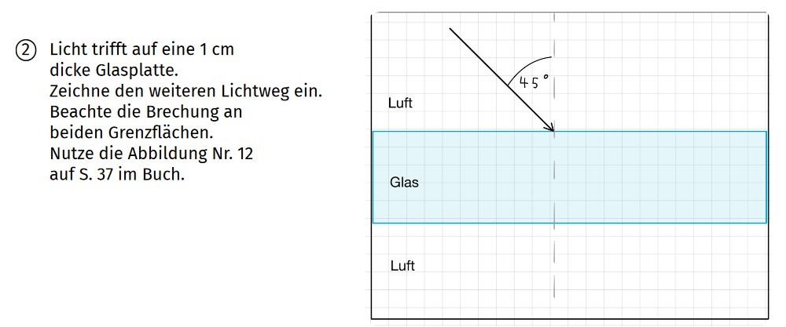
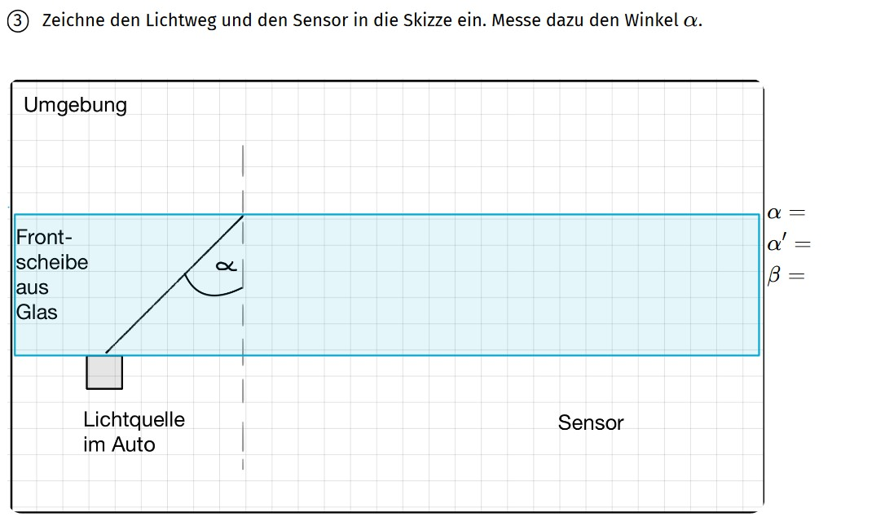
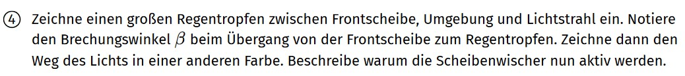

Physik · Optik
Brechung und Reflexion
Wähle eine Aufgabe aus und decke die Hinweise nacheinander auf. Überlege nach jedem Hinweis zuerst selbst, bevor du den nächsten anschaust.
Lichtweg durch das Glas

Gehe in mehreren Schritten vor. Zeichne zuerst den Übergang von Luft nach Glas ein.
Beim Übergang Luft → Glas wird der Lichtstrahl zum Lot hin gebrochen. Wie groß ist der Brechungswinkel \(\beta\)?
Nutze das Brechungsdiagramm auf Seite 37 um den Brechungswinkel zu bestimmen.
Zeichne das Lot ein und miss den Winkel beim Übergang Glas → Luft.
Bestimme den Brechungswinkel \(\beta\) beim Übergang Glas → Luft.
Totalreflexion im Regensensor

Miss den Winkel \(\alpha\). Die Umgebung ist die Luft. Kommt es zur Totalreflexion?
Ab welchem Grenzwinkel kommt es beim Übergang Glas → Luft zur Totalreflexion? Nutze das Brechungsdiagramm auf S. 37.
Das Licht wird mehrfach total reflektiert, bevor es auf den Sensor trifft. Hierbei gilt das Reflexionsgesetz. Wie groß ist dann der Reflexionswinkel \(\alpha'\)?
Zeichne den Sensor ein. Genau wie die Lichtquelle ist er direkt an der Frontscheibe platziert.
Regentropfen auf der Scheibe

Der Regentropfen kann an mehreren Stellen eingezeichnet werden. Er darf sehr groß sein.
Was hat sich verändert? Handelt es sich noch um einen Übergang Glas → Luft?
Durch den Regentropfen kommt es zu einem Übergang Glas → Wasser. Gibt es immer noch Totalreflexion?
Beim Übergang Glas → Wasser wird das Licht gebrochen. Bestimme den Brechungswinkel \(\beta\) im Diagramm auf S. 37.
Die Scheibenwischer werden aktiviert, wenn der Sensor kein Licht mehr detektiert.